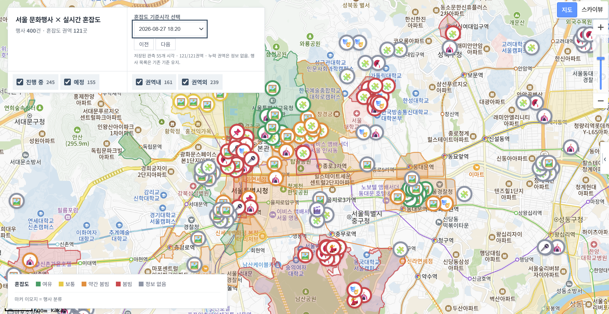
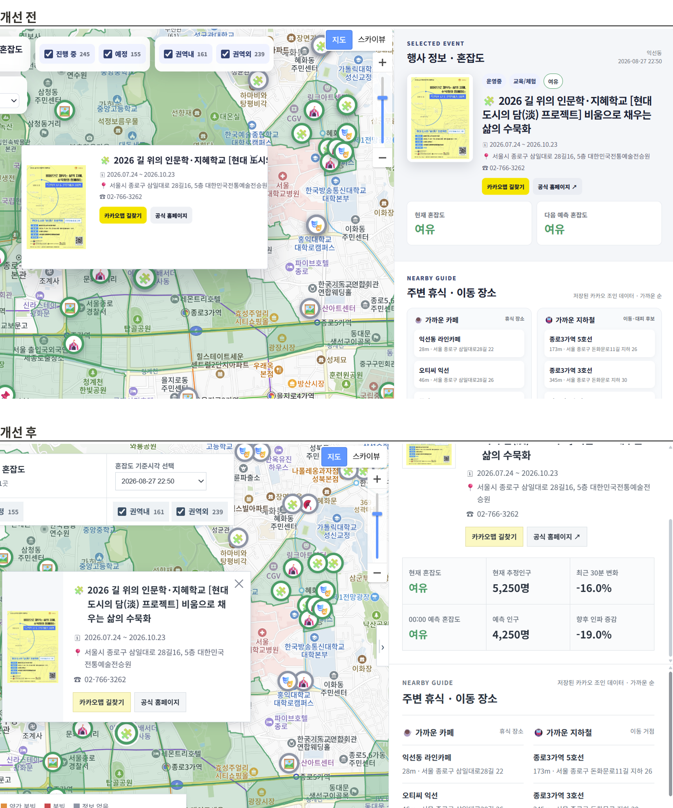

02 서울시 문화행사 혼잡도 지도
팀 프로젝트 · 지도형 서비스 기획
서울시 문화행사와 지역 혼잡도, 주변 이동 정보를 한 지도에 연결해 행사 탐색과 방문 판단을 돕는 서비스입니다.
역할
기획·데이터 작업·디자인·QA 공동 참여. 지도 화면 설계와 혼잡도 자동 수집 직접 담당
구현 범위
수집한 데이터를 사용하는 지도 시제품

01 · PROBLEM
행사 일정과 장소를 확인해도, 방문하려는 지역이 얼마나 붐비는지와 주변 이동 거점을 함께 파악하기는 어렵다고 보았습니다. 행사 정보와 혼잡도, 가까운 지하철역 등의 정보를 연결하면 방문 판단을 도울 수 있다는 가설에서 출발했습니다.
판단 근거: 서울시의 주요 장소 혼잡도 산출·공개 · 이용자 수요 조사 미실시
02 · DECISION
239 / 400
혼잡도 제공 구역 밖의 행사
진행·예정 행사 400건을 혼잡도 제공 구역과 대조한 결과, 239건은 제공 구역 밖에 있었습니다. 가까운 구역의 혼잡도를 대신 붙이면 행사 장소의 상황으로 오해할 수 있어 정보 제공 여부를 명확하게 구분했습니다.
행사가 제공 구역 안에 있는지에 따라 보여 주는 정보를 나눴습니다.
| 상황 | 제공하는 정보 |
|---|---|
| 혼잡도 제공 구역 안의 행사 (161건) | 행사 정보와 해당 지역의 혼잡도 |
| 혼잡도 제공 구역 밖의 행사 (239건) | 행사 일정·장소와 주변 이동 정보, 혼잡도 미제공 안내 |
미리 일정을 정하지 않았더라도, 방문한 동네에서 열리는 행사를 지도에서 발견할 수 있어야 한다고 보았습니다. 그래서 혼잡도 제공 구역 밖의 행사도 제외하지 않고 지도에 남기고 필터로 두 경우를 나눠 볼 수 있게 했습니다.
03 · SCREEN
지도 영역, 마커 팝업, 오른쪽 상세 패널에 어떤 정보를 어떤 순서로 넣을지는 직접 설계도로 정리했고 이 설계도를 바탕으로 ChatGPT와 협업해 대시보드를 구현했습니다.
| 영역 | 최초 설계 | 최종 화면 |
|---|---|---|
| 지도 마커 | 혼잡도를 마커 색으로, 행사 분류를 이모지로 표시 | 121개 권역을 혼잡도 색으로 칠하고 마커에도 같은 색 적용, 제공 구역 밖의 행사는 '정보 없음'으로 표시 · 행사 분류 이모지 유지 |
| 필터 | 예정·진행 중만 표시, 종료 행사 제외 | 유지, 상단 집계도 같은 기준으로 맞춤 |
| 갱신 시간 | 필터 옆에 데이터 갱신 시간 표시 | 기준 시각 선택으로 확장 |
| 상세 블록 상단 | 행사 정보와 혼잡도 | 추정 인구, 최근 30분 변화, 다음 예측 추가 |
| 상세 블록 하단 | 근처 카페·지하철(추천 대피 장소), 후기란 | 지하철은 '가까운 이동 거점'으로 바꾸고 공식 대피소가 아니라는 안내 추가 · 후기란은 API로 충분한 후기를 불러오기 어려워 제외 |
04 · QA
문제혼잡도 등급만으로는 사람이 늘고 있는지 줄고 있는지 알 수 없었습니다.
개선추정 인구, 최근 30분 변화, 예측 정보를 함께 표시했습니다.

문제오른쪽 상세 패널이 지도 탐색 공간을 차지했습니다.
개선패널 접기 기능을 더해 행사를 훑어볼 때는 지도를 넓게 쓰고 고른 뒤에는 상세를 펼쳐 보게 했습니다.
| 발견한 문제 | 개선 내용 |
|---|---|
| 긴 행사명이 팝업 밖으로 이탈 | 팝업 제목의 줄바꿈 규칙을 보완해 긴 문자열도 칸 안에서 줄을 바꿈 |
| 팝업 폭이 400px로 고정돼 작은 화면에서 잘림 | 반응형 폭으로 바꾸고 링크 버튼은 필요하면 다음 줄로 배치 |
| 종료된 행사가 집계 숫자에 섞일 가능성 | 표시와 건수를 운영 중 + 예정 행사 기준으로 맞춰 지도의 마커 수와 상단 집계를 일치 |
| 121개 권역 정보를 마우스를 올려야만 확인 | 권역을 눌러도 정보가 유지되도록 보완해 터치 기기에서도 확인 |
| 주변 카페·지하철 이름과 주소가 한 줄 말줄임으로 잘림 | 최대 2줄까지 보여 주어 장소를 고를 때 필요한 정보를 노출 |
| 지하철을 대피 후보로 오해할 수 있는 표현 | '가까운 이동 거점'으로 바꾸고 공식 대피소가 아니라는 안내를 유지 |
| 노트북 화면에서 대시보드가 답답하게 잘릴 가능성 | 고정 높이 의존을 줄이고 화면 크기에 따라 배치가 바뀌도록 보완 |
| 둥근 카드와 그림자가 많아 시선이 분산 | 직선형 패널과 얕은 그림자, 분명한 구획으로 정리해 공공데이터 대시보드에 맞는 정보 위계로 변경 |
QA 범위: 개인 사용 점검 · 코드 반영은 AI 협업 · 외부 이용자 검증 미실시
05 · RESULT
행사와 지역 혼잡도, 주변 이동 정보를 한 화면에 연결하는 시제품을 구현했습니다. 특히 혼잡도 정보의 제공 범위를 명확히 구분하고 직접 사용하며 탐색 흐름을 개선했습니다.
다음으로는 자동 수집한 최신 정보가 지도에 바로 반영되도록 연결하려 합니다. 이후 이용자가 행사 선택부터 혼잡도 확인과 길찾기까지 필요한 정보를 이해하고 이동할 수 있는지 확인하려 합니다.
데이터 기준: 2026-08-27 수집분 · 실시간 자동 갱신 미적용
06 · DATA
5,808건
121개 권역 · 48회 자동 수집
| 기능 | 하는 일 |
|---|---|
| 행사 마커와 필터 | 진행 중·예정, 혼잡 권역 안·밖으로 행사를 골라 봅니다. |
| 혼잡도 권역 색상 | 121개 권역을 여유·보통·약간 붐빔·붐빔으로 칠합니다. |
| 기준 시각 선택 | 혼잡도를 어느 시점 기준으로 볼지 고릅니다. |
| 행사 상세 패널 | 현재 혼잡도와 추정 인구, 최근 30분 변화, 다음 예측을 보여줍니다. |
| 주변 휴식·이동 장소 | 가까운 카페와 지하철역을 거리순으로 보여줍니다. |
| 길찾기·공식 홈페이지 | 카카오맵 길찾기와 행사 공식 페이지로 바로 넘어갑니다. |
출처 구분: 혼잡도 등급·추정 인구는 서울시 제공 · 최근 30분 변화는 수집 기록으로 자체 계산
시간대별 차이(121개 권역): 18:20 붐빔 21곳·약간 붐빔 42곳 · 22:50 여유 119곳